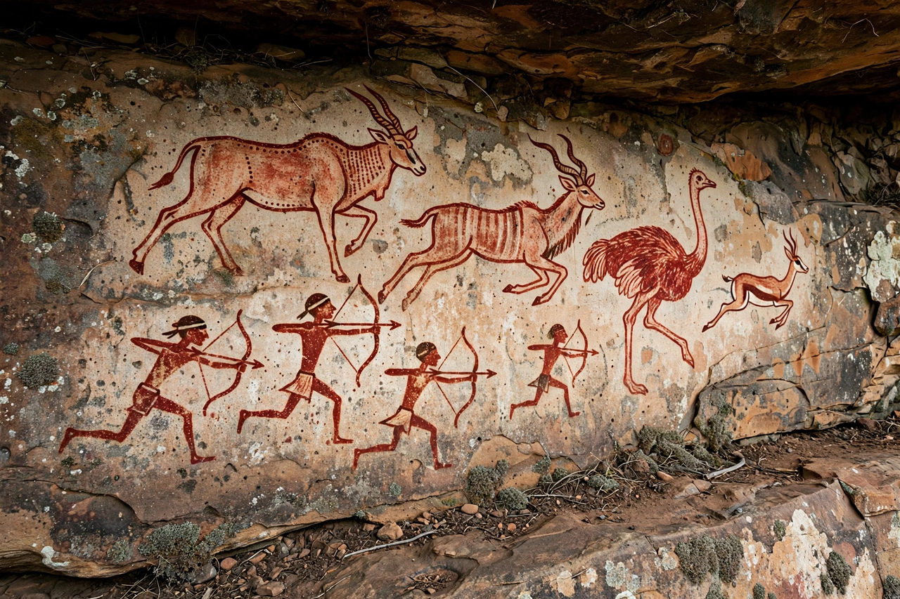

| Rock art | |
|---|---|
 Prehistoric rock paintings in a shelter | |
| Forms | Petroglyphs (carved), pictographs (painted) |
| Age range | Over 40,000 years to recent centuries |
Rock art consists of human-made markings placed on natural stone surfaces. It includes petroglyphs, images carved or pecked into rock, and pictographs, images painted with pigments such as ochre and charcoal. Rock art is found on every inhabited continent and is one of the oldest surviving forms of human expression, extending back more than 40,000 years.
Famous concentrations include the painted caves of the European Upper Palaeolithic (Chauvet, Altamira, Lascaux), the vast galleries of the Sahara (Tassili n'Ajjer), the San rock paintings of southern Africa — including hundreds of painted shelters in Zimbabwe's Matobo Hills — the petroglyph fields of Scandinavia and North America, and the immense body of Aboriginal Australian rock art, some of it still within living tradition, as at Uluṟu-Kata Tjuṯa.
Rock art is notoriously difficult to interpret. Proposed functions include hunting magic, recording events and territories, initiation and ritual, astronomy, and shamanic practice: the neuropsychological model links many geometric motifs to entoptic phenomena seen in trance. Where descendant communities survive, as with San and Aboriginal Australian peoples, ethnographic testimony has proved crucial to understanding meaning.
Pigments can sometimes be radiocarbon dated; carvings are dated by style, superimposition, and mineral accretions. Rock art is vulnerable to weathering, vandalism and development, and many major sites are protected as national monuments or UNESCO World Heritage Sites.